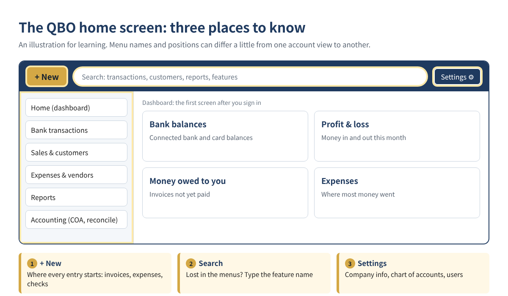
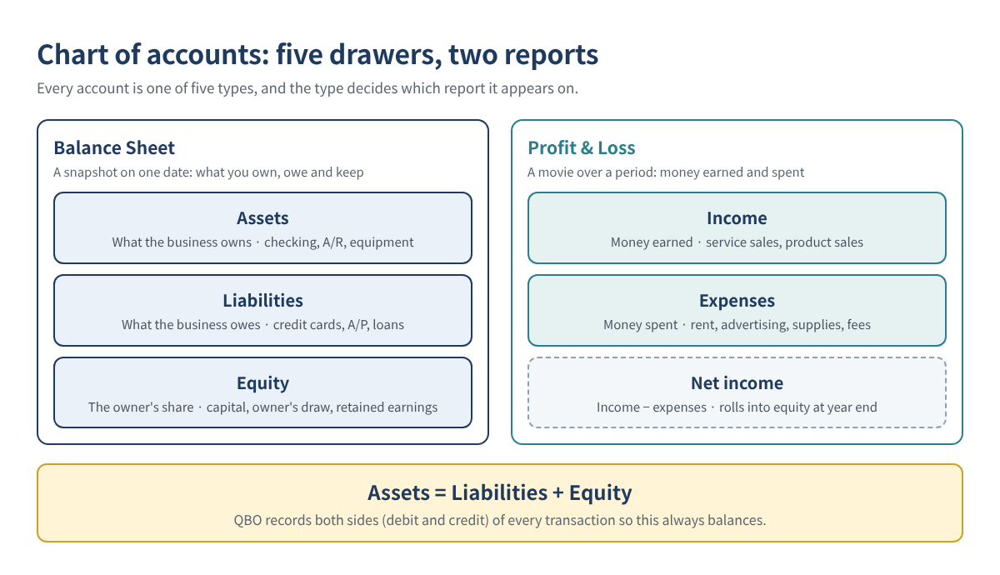
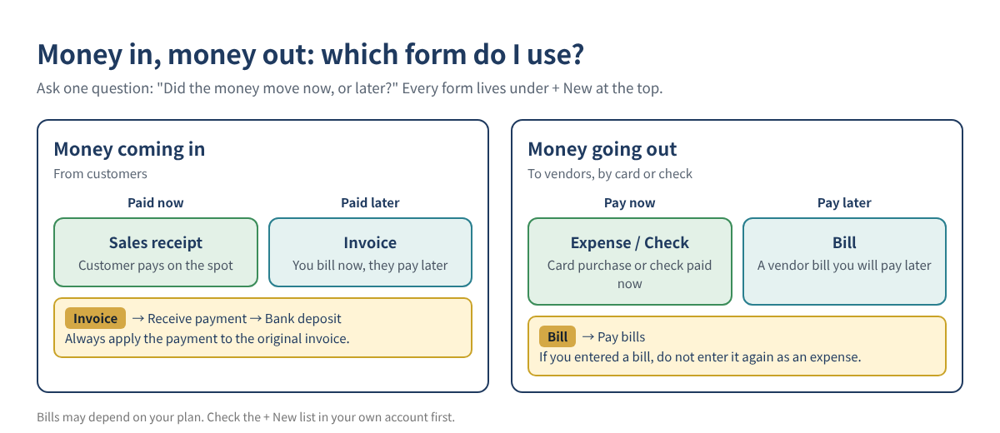
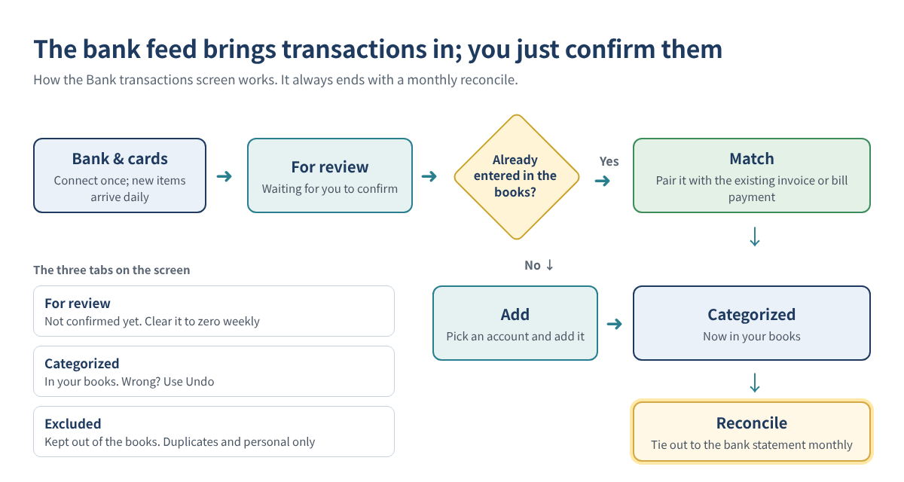

"I opened QuickBooks Online and I have no idea where to click first." That is the most common thing new users say. Relax. QuickBooks Online (QBO) is really just your business checkbook, kept online. Write down money that comes in, write down money that goes out, and see what is left at the end of the month.
This guide walks you through it like a class: ten short lessons, each with a picture or a table, and a short quiz at the end. By the last lesson you will be able to keep your own books up to date every week.
Who this is for: small business owners opening QuickBooks Online for the first time, QuickBooks Desktop users moving to Online, and anyone who has always left the books to an accountant because the terms felt foreign.
| Lesson | Topic | In one line |
|---|---|---|
| 1 | What QBO is and how it differs from Desktop | Books in the cloud |
| 2 | Choosing a plan | The right plan for your business |
| 3 | Five settings to make first | Before you enter anything |
| 4 | The home screen | + New, search, Settings |
| 5 | Chart of accounts | Labels for your money |
| 6 | Customers, vendors and products | Your address book |
| 7 | Money in and money out | Invoice, sales receipt, expense, bill |
| 8 | Bank feeds | Match or Add |
| 9 | Monthly reconciliation | Books vs. bank statement |
| 10 | Three reports to read | Your report card |
QBO is Intuit's cloud accounting software. Nothing is installed: you sign in from a web browser or the phone app. Because the books live on Intuit's servers, what you enter at the shop is the same thing you see at home and the same thing your accountant sees.
| QuickBooks Online | QuickBooks Desktop | |
|---|---|---|
| Install | None; browser or phone app | Installed on a computer |
| Where you work | Anywhere with internet | Mostly the computer it is installed on |
| Updates | Automatic | Upgrade by version |
| Bank connection | Pulls transactions daily | Possible, more manual work |
| Working with an accountant | Invite them as a user | Send files back and forth |
| Billing | Monthly subscription | Annual subscription |
| What you did in Desktop | Where it is in QBO |
|---|---|
| Create Invoices | + New → Invoice |
| Receive Payments | + New → Receive payment |
| Make Deposits | + New → Bank deposit |
| Enter Bills / Pay Bills | + New → Bill / Pay bills |
| Write Checks | + New → Check |
| Enter Credit Card Charges | + New → Expense |
| Undeposited Funds | Undeposited Funds (shown as Payments to deposit on some screens) |
| Reconcile | Settings ⚙ or the accounting menu → Reconcile |
Moving your data over is covered step by step in QuickBooks Desktop to Online: a step-by-step migration guide.
Teacher's note: If the accounting words feel heavy, hold on to one question for the whole class: "Where did the money come from, and where did it go?" Every feature in QBO exists to answer it.
A one-person business can start with Simple Start; if you have staff or pay vendors later, start looking at Essentials. These are the US list prices after the August 2026 increase.
| Plan | List price / month | Users | Key features | Good for |
|---|---|---|---|---|
| Simple Start | $38 | 1 | Invoicing and payments, bank feeds, income and expense tracking, basic reports | Solo service businesses |
| Essentials | $85 | 3 | Simple Start plus multi-currency, employee time on invoices and more | Small teams with vendor bills |
| Plus | $140 | 5 | Essentials plus inventory, project profitability, budgets | Product sellers, project work |
| Advanced | $340 | 25 | Plus plus 24/7 support, custom permissions, batch invoicing, automation | Larger teams |
Source: NerdWallet, updated Oct 19, 2026. Check Intuit's own site for current pricing before you sign up.
New subscribers can usually choose either a 30-day free trial or a discount for the first few months. Enter a few real transactions during the trial before you decide. Prices tend to go up every summer:
| Price change | Simple Start | Essentials | Plus | Advanced |
|---|---|---|---|---|
| Aug 2023 | $30 | $60 | $90 | $200 |
| Aug 2024 | $35 | $65 | $99 | $235 |
| Jul 2025 | $38 | $75 | $115 | $275 |
| Aug 2026 | $38 | $85 | $140 | $340 |
Source: NerdWallet. Budget for a yearly increase.
Teacher's note: You can upgrade later. Start small and move up one plan when you actually need a feature.
Like a house, the books depend on the foundation. Check these five things before entering transactions. Most are under Settings (gear) → Account and settings.
After a tax year is filed, set a closing date (Close the books) so nobody accidentally changes a period that is already reported.
The screen looks busy, but you will spend most of your time in three places: + New at the top, the search bar in the middle and Settings (gear) at the top right.

| When you want to | Go here |
|---|---|
| Enter anything new: invoice, expense, check | + New at the top |
| Review transactions from the bank | Bank transactions in the left menu |
| See customers and money owed to you | The sales and customers area in the left menu |
| Edit company info, chart of accounts, users | Settings ⚙ at the top right |
| Find something you cannot locate | Type the feature name in search (e.g. reconcile) |
Intuit renames and regroups the left menu from time to time (Intuit guide), so the habit of typing a feature name into search lasts longer than memorizing where things sit.
The chart of accounts is the list of labels for every dollar. Think of a dresser with five big drawers, each with small dividers inside. Keeping books is mostly deciding, for each transaction, which drawer it goes in.

| Type | In plain words | Example accounts | Report |
|---|---|---|---|
| Assets | What the business owns | Checking, accounts receivable, equipment, vehicles | Balance Sheet |
| Liabilities | What the business owes | Credit cards, accounts payable, loans, sales tax payable | Balance Sheet |
| Equity | The owner's share | Owner's investment, owner's draw, retained earnings | Balance Sheet |
| Income | Money earned | Service sales, product sales | Profit & Loss |
| Expenses | Money spent | Rent, advertising, supplies, card fees | Profit & Loss |
QBO creates a starter chart of accounts for your industry when you sign up (Settings ⚙ → Chart of accounts). Use it as is at first and add accounts only when you need to line up with a tax form.
Teacher's note: Too many drawers and you spend the day looking for the right one. Fewer and clearer is better. If two accounts do the same job, merge them.
Seeing an Opening Balance Equity balance? Read how to clean up Opening Balance Equity.
| List | What it holds | Example | Used on |
|---|---|---|---|
| Customers | People who pay you | Kim Dental, Park Auto | Invoices, sales receipts |
| Vendors | People you pay | Landlord, food supplier, ad agency | Bills, expenses, checks |
| Products and services | What you sell and the price | Catering $400, monthly bookkeeping $300 | Invoices, sales receipts |
When you set up a product or service, pick the income account it posts to. After that, every invoice lands sales in the right drawer automatically.
This is the core lesson. Ask one question: "Did the money move now, or will it move later?" The answer tells you which form to use, and every form lives under + New.

| Situation | Form | Example |
|---|---|---|
| You work now, the customer pays later | Invoice → Receive payment | Catering billed Net 30 |
| The customer pays on the spot | Sales receipt | Card payment at the counter |
| You take several payments to the bank | Bank deposit | Three checks deposited together |
| You pay now by card or cash | Expense | Office supplies on a card |
| You pay now by check | Check | Rent check |
| You get a vendor bill to pay later | Bill → Pay bills | Supplies on account, paid at month end |
Sample values. Income is recorded once, on the invoice. Entering the deposit as income again would double your sales.
Teacher's note: Every invoice needs a Receive payment when the money comes in, or that customer stays "unpaid" forever. The same goes for bills and Pay bills.
Payments stuck in Undeposited Funds? See how to clean up Undeposited Funds.
Once your bank and cards are connected, transactions arrive every day. Your job is just to confirm each one and give it a label.

Know the three tabs: For review (not yet confirmed), Categorized (in your books; use Undo if wrong) and Excluded (kept out; only duplicates or personal items belong here).
Teacher's note: Automatic categorizing is sometimes wrong. Clearing For review to zero once a week is enough.
Reconciling checks that your books match the bank statement. It is grading the test: you answered the questions (transactions), now compare them to the answer key (the statement).
For a hands-on method, see how to find duplicate transactions and reconciliation differences.
| Report | Tells you | Think of it as | Check this |
|---|---|---|---|
| Profit & Loss | Money earned minus money spent over a period | A semester report card | Is net income positive? |
| Balance Sheet | What you own and owe on one date | A health checkup photo | Does the bank balance match the real account? |
| Statement of Cash Flows | Where cash actually came from and went | The receipts in your wallet | Why there is profit but no cash |
| Line | November | How to read it |
|---|---|---|
| Total income | $18,500 | Sales this month |
| Total expenses | $14,200 | Rent, supplies, wages and so on |
| Net income | $4,300 | 18,500 − 14,200 = profit this month |
Sample values.
"We made $4,300, so why is the account nearly empty?" Open the cash flow report. Unpaid invoices, loan principal payments, equipment purchases and owner draws all use cash without lowering profit.
At the top of every report you can change the period and the accounting method (cash or accrual). Make sure it matches the basis you file taxes on.
| # | Mistake | Why it hurts | Do this instead |
|---|---|---|---|
| 1 | Mixing personal and business money | Categories get tangled and deductions are harder to support | Use a separate business account and card |
| 2 | Recording an invoice payment as new income at deposit | Sales are counted twice | Match the bank line to the payment |
| 3 | Leaving everything Uncategorized | The P&L means nothing | Clear For review weekly |
| 4 | Skipping reconciliation | Books drift away from the bank | Reconcile every month |
| 5 | Recording owner draws as expenses | Profit looks smaller and taxes come out wrong | Use an owner's draw equity account |
Already have many miscategorized transactions? See how to reclassify them in one journal entry.
Yes. You choose a form and QBO records the debits and credits for you. Just make sure you understand the five account types (Lesson 5) and "now or later" (Lesson 7).
Yes. The QuickBooks app lets you review transactions, send invoices and snap receipts. Upload receipts the day you get them.
Cash counts money when it actually moves; accrual counts it on the invoice or bill date. You can switch the view on any report, but agree on the tax basis with your accountant.
A common approach is to enter an Expense paid from an equity account such as Owner's investment, which records that you put personal money into the business. If it happens often, get a business card.
Answers: 1. Invoice (then Receive payment) · 2. Equity, owner's draw, not an expense · 3. Profit & Loss · 4. Match, not Add · 5. Equity
Five out of five? You have graduated from QBO basics.
This article is educational information, not tax, legal or financial advice. QuickBooks Online screens, menu names and prices change often; check the current screens and Intuit's guidance, and talk to a tax professional about your situation.